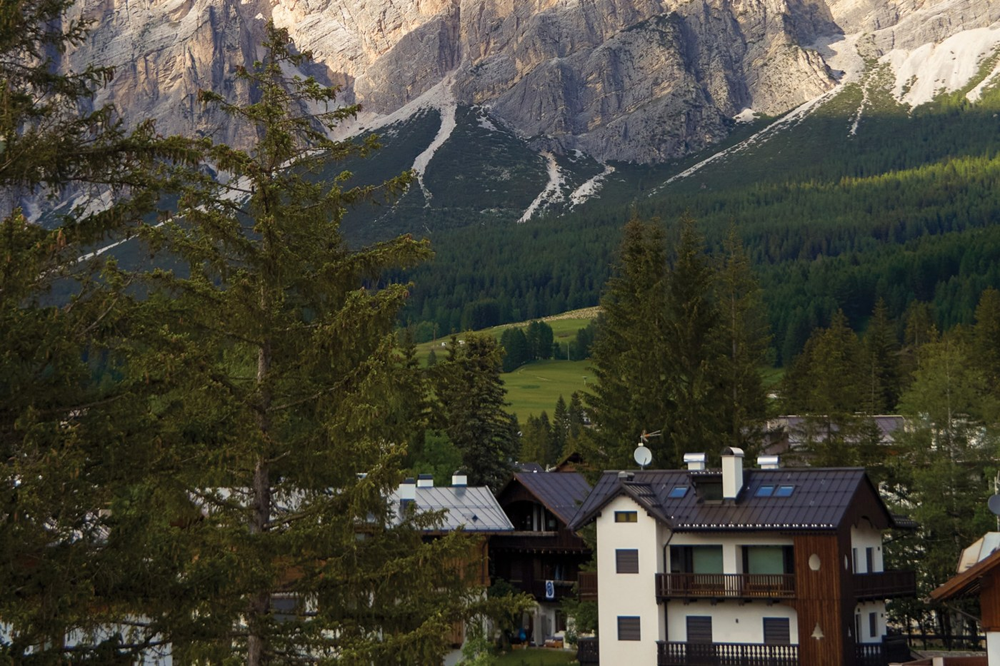
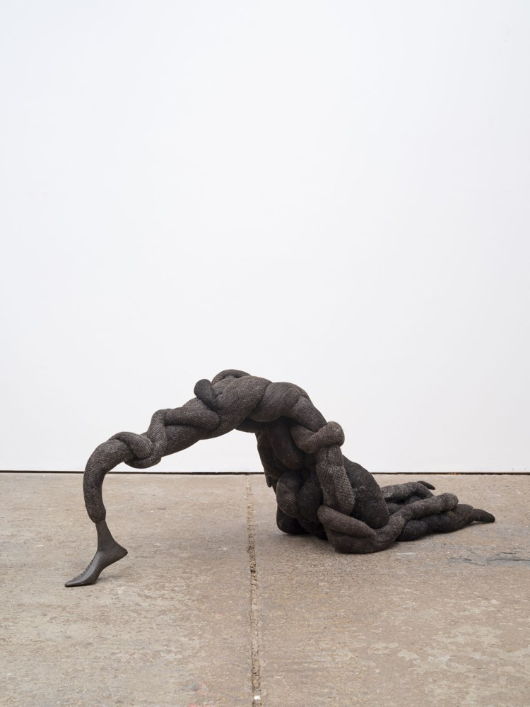

Exhibitions 03 1 min read
Anina Major's The Sacred Mangrove Anina Major's first solo at a major international institution opened at Pérez Art Museum Miami on 1 October.
Read the briefing + Anina Major's first solo at a major international institution opened at Pérez Art Museum Miami on 1 October.
Material: Woven stoneware, built on Bahamian palm plaiting passed down by women.Scale: Towering forms, bottle trees, scattered shells and a recorded Bahamian beach soundscape.Curator: Jennifer Inacio.Read the original reporting
Artsy
Design 05 1 min read
Shoreditch Design Week debuts London's Shoreditch held its first Design Week this month, with no single theme or trend.
Read the briefing + London's Shoreditch held its first Design Week this month, with no single theme or trend.
Takeaway: Touch and material over narrative; many voices at once, per commentator Manu Pagliosa.Read the original reporting
Homecrux
Culture 06 1 min read
Museum of Word, Kolkata Kolkata's Museum of Word explores India's scripts, oral traditions and printing history in nine interactive galleries.
Read the briefing + Kolkata's Museum of Word explores India's scripts, oral traditions and printing history in nine interactive galleries.
Home: Belvedere House, inside the National Library.Read the original reporting
The Week
Craft 07 1 min read
Likha 5, Manila Likha 5 brings more than 100 Filipino artisans together in Pasay City, four days from 1 October.
Read the briefing + Likha 5 brings more than 100 Filipino artisans together in Pasay City, four days from 1 October.
Showing: Handwoven textiles, artisanal crafts, garments and heritage pieces.Read the original reporting
The Manila Times
Print 08 1 min read
Image: The Spinoff Spoor Books, New Zealand Spoor Books, a two-person part-time press, published Terri Te Tau's The Valley of Unlikely Acquaintances.
Read the briefing + Spoor Books, a two-person part-time press, published Terri Te Tau's The Valley of Unlikely Acquaintances.
Claim: The Spinoff's books editor calls it her favourite Aotearoa novel of 2026; the headline's 'novel of the year' is the outlet's framing, not a prize.Read the original reporting
The Spinoff
Print 09 1 min read
Independent magazine events, autumn Overleaf's autumn calendar lists launch parties, readings and fundraisers for independent magazines.
Read the briefing + Overleaf's autumn calendar lists launch parties, readings and fundraisers for independent magazines.
Point: Print fairs and readings kept strong through summer.Read the original reporting
Overleaf
Books 10 1 min read
Pisa Book Translation Award Silvia Pozzi won a Pisa Book Translation Award for the Italian edition of Kevin Chen's Ghost Town.
Read the briefing + Silvia Pozzi won a Pisa Book Translation Award for the Italian edition of Kevin Chen's Ghost Town.
Title: Città fantasma, from Taiwanese novelist Kevin Chen.Read the original reporting
Focus Taiwan
Exhibitions 11 1 min read
PhotoMuse Festival, Kerala PhotoMuse opened on 2 October across 25-plus Kerala venues and runs to 31 January 2027.
Read the briefing + PhotoMuse opened on 2 October across 25-plus Kerala venues and runs to 31 January 2027.
Scale: 490 photo-artists, 1,530 photographs, 70 exhibitions, 31 countries.Theme: Marks 200 years of photography.Read the original reporting
Indo Arab News
Food 12 1 min read
Image: Feast Journal HAŌMA's Kalyaatra menu, Bangkok HAŌMA in Bangkok has a new tasting menu travelling through eight eras of Indian cuisine.
Read the briefing + HAŌMA in Bangkok has a new tasting menu travelling through eight eras of Indian cuisine.
Chef: Deepanker Khosla opened it almost ten years ago, with an urban garden; Michelin-starred.Note: Michelin dropped its Green Star in May 2026, per the piece.Read the original reporting
Feast Journal
Travel 13 1 min read
Château de Cîteaux, Burgundy A 19th-century château in Meursault has reopened as a hotel mixing historic grandeur with mid-century design.
Read the briefing + A 19th-century château in Meursault has reopened as a hotel mixing historic grandeur with mid-century design.
Inside: Rococo dining room, Burgundy-inspired restaurant, Cistercian-inspired Alaena Spa.Read the original reporting
AOL
Travel 14 1 min read

Image: Galerie Le Graal Cortina Le Graal opens its first property in Cortina d'Ampezzo, with interiors by Achille Salvagni.
Read the briefing + Le Graal opens its first property in Cortina d'Ampezzo, with interiors by Achille Salvagni.
Cue: Alpine heritage, in the Dolomites.Read the original reporting
Galerie
Exhibitions 15 1 min read
ABITO at National Gallery Singapore ABITO premieres in Singapore: ten exhibits, one per decade, on fashion, design and women's lives since the 1800s.
Read the briefing + ABITO premieres in Singapore: ten exhibits, one per decade, on fashion, design and women's lives since the 1800s.
Angle: Silhouette, material and craft as records of social change.Read the original reporting
Vogue Singapore
Design 16 1 min read
València Inspira Diseño 2026 València Inspira Diseño 2026 ran four days at Feria Valencia, bringing habitat, textile and interiors platforms together.
Read the briefing + València Inspira Diseño 2026 ran four days at Feria Valencia, bringing habitat, textile and interiors platforms together.
Includes: Feria Hábitat València and Textilhogar; furniture, lighting, textiles, kitchens, ceramics, new materials.Read the original reporting
Identity
Craft 17 1 min read
Sethu, Indian weaving in New York Sethu, founded in 2024 by Aditya Natarajan, makes what it calls Indian Americana from handwoven, naturally dyed fabrics.
Read the briefing + Sethu, founded in 2024 by Aditya Natarajan, makes what it calls Indian Americana from handwoven, naturally dyed fabrics.
Read the original reporting
Heddels
Exhibitions 18 1 min read

Image: Art Collector News Nicola Turner at Annely Juda Nicola Turner's first solo show with Annely Juda fills 16 Hanover Square with wool and horsehair sculpture.
Read the briefing + Nicola Turner's first solo show with Annely Juda fills 16 Hanover Square with wool and horsehair sculpture.
Title: I Tear Secrets From Your Yielding Flesh.Material: Wool and reclaimed horsehair, hanging and leaning through the rooms.Read the original reporting
Art Collector News
Cities 19 1 min read
Tallinn's Väike-Ameerika redesign Tallinn's preliminary redesign of Väike-Ameerika and Luha streets adds calming, planting and pedestrian space.
Read the briefing + Tallinn's preliminary redesign of Väike-Ameerika and Luha streets adds calming, planting and pedestrian space.
Next: Public presentation 7 October at Tallinn University of Applied Sciences.Status: Preliminary design only.Read the original reporting
The Baltic Review
Cities 20 1 min read
Quisqueya Plaza, Inwood Local officials in Inwood, Manhattan want to bring cars back to a five-year-old car-free plaza on Dyckman Street.
Read the briefing + Local officials in Inwood, Manhattan want to bring cars back to a five-year-old car-free plaza on Dyckman Street.
Caveat: Streetsblog is an advocacy outlet; one side's framing.Read the original reporting
Streetsblog NYC
Travel 21 1 min read
Image: Monocle City guide: Mexico City A refreshed city guide to Mexico City: mezcal bars in Juárez, jacarandas in Condesa, galleries in San Miguel Chapultepec.
Read the briefing + A refreshed city guide to Mexico City: mezcal bars in Juárez, jacarandas in Condesa, galleries in San Miguel Chapultepec.
Caveat: Evergreen guide page updated this week, not breaking news.Read the original reporting
Monocle